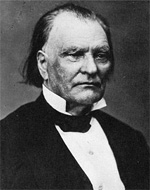

|

|

|
|
|
Born in Fleeting Hills, Massachusetts on October 27, 1800,
Benjamin Franklin Wade moved with his family to Andover,
Ohio in 1821. He began practicing law in 1827, and over the
next two decades served as a prosecuting attorney, a state
senator, and a circuit judge. On March 15, 1851, he
received the news of his election to the U.S, Senate.
Wade served his first term as a Whig, but in the two
terms that followed he represented the Republican Party. In
his attacks on the Kansas-Nebraska Act and his defense of
his colleague Charles Sumner, Wade displayed both his
principles and leadership ability. He earned the nickname
of "Bluff" Ben Wade and the respect of his Northern
colleagues for answering the challenge by a Southerner to
duel with the reply that he favored squirrel guns at twenty
paces. More important, within the Senate chambers during
the War the Ohio Senator served as an outspoken voice of the
Radical Republicans, pushing for a more aggressive military
policy from Lincoln and his administration. Wade also
utilized his chairmanship of the Joint Committee on the
Conduct of the War and the proposed Wade-Davis bill to
actively campaign for the abolition of slavery and a harsh
reconstruction.
In 1867, Wade became the President of the Senate. In
this position he, along with Chief Justice Salmon Chase,
presided over the impeachment proceedings of President
Andrew Johnson. Following the unsuccessful attempt to
remove Johnson from office, Wade retired from the Senate and
returned to Ohio. In 1868 he failed to gain the
vice-presidential nomination on the Grant ticket, and in
1876 he served as a presidential elector, repudiating the
compromise that gave Hayes the presidency of the United
States.
Benjamin Wade died in Jefferson, Ohio on March 2, 1878.
Source: Joan Waugh, ed., Facts on File Encyclopedia of American
History: Civil War and Reconstruction, 1856 to 1869 (New York: Facts on
File, 2003), 383.
|